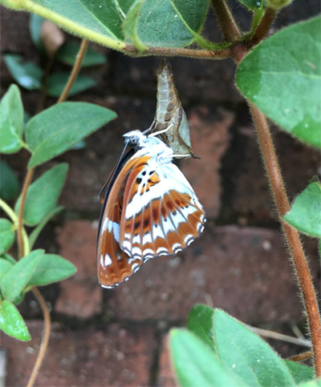

蝴蝶
望着窗外，嘈杂的交通和拥挤的高楼，是这个城市每日的面目。
一条狭窄的绿化带上，几只蝴蝶在快活地飞，思绪回到了我的童年。当年此刻的家乡田野，应该绿油油的麦田，麦苗也应该抽穗扬花了，父亲拿着铁锹清理渠道准备灌溉。田埂上长着一些漂亮却不知名的野花，总会有很多蝴蝶围绕着这些花，或短暂停留，或徘徊飞舞。我和弟弟们会脱下外套，瞅准时机扑上去，趴在地上，一点一点掀开，将它的翅膀折叠在一起，捏在手里看着它的眼睛和触角，好像能感觉到它因为害怕而颤抖，于是我把它放飞，手指上留下一层油腻的粉末。
时光走远，人物皆非，家乡没有人再种麦子了，我们也不再去田里捉蝴蝶，似乎这一切只是属于我们童年的幻象。渠道里潺潺的流水声总是那么清晰地在我记忆里回想，初夏的风拂过水面吹在身上带着些凉意，漂亮的小蝴蝶没有了我们的捣乱会不会飞的很寂寞？
蝴蝶，历经苦难来到世界，你的生命是那么短暂，却从不发出没任何的怨言。破茧而出，华衣采采，凌花而舞，庄生晓梦。蝴蝶，谢谢你给了我一段美好的有关于童年的回忆，也许你并不曾记得这些，也许你已经遗忘，也许你像我一样怀念那段似水流年。
时光走远，人物皆非，家乡没有人再种麦子了，我们也不再去田里捉蝴蝶，似乎这一切只是属于我们童年的幻象。渠道里潺潺的流水声总是那么清晰地在我记忆里回想，初夏的风拂过水面吹在身上带着些凉意，漂亮的小蝴蝶没有了我们的捣乱会不会飞的很寂寞？
蝴蝶，历经苦难来到世界，你的生命是那么短暂，却从不发出没任何的怨言。破茧而出，华衣采采，凌花而舞，庄生晓梦。蝴蝶，谢谢你给了我一段美好的有关于童年的回忆，也许你并不曾记得这些，也许你已经遗忘，也许你像我一样怀念那段似水流年。